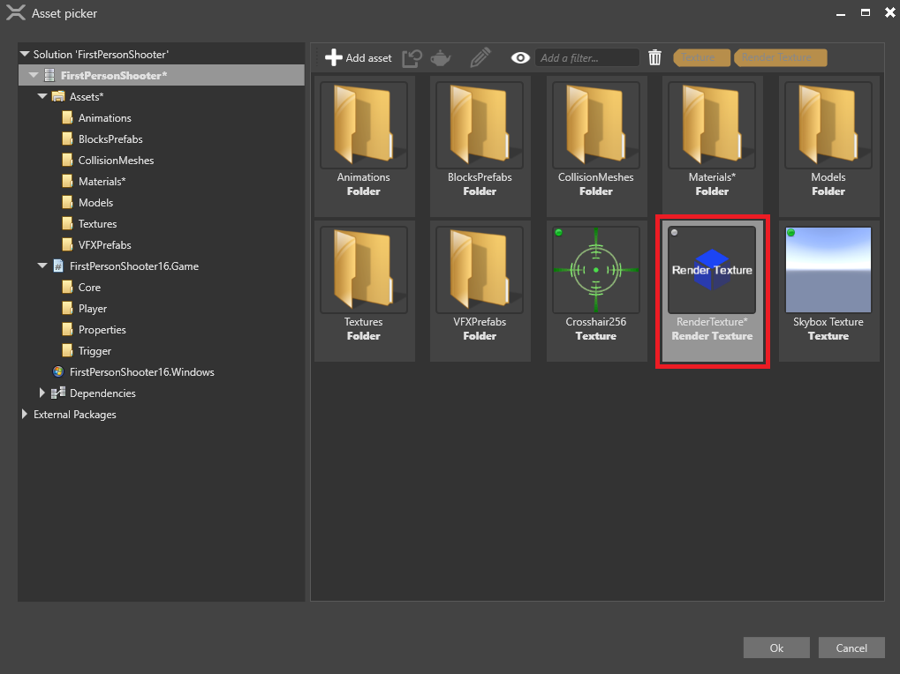

オーバーレイ
VR ゲームでは、テクスチャ (レンダー テクスチャを含む) をプレイヤーの正面に浮動表示されるオーバーレイとして表示できます。これは、UI に特に有効です。
Note
ゲームを VR デバイスで実行していない場合は、オーバーレイを表示できません。これは、VR デバイス自体がオーバーレイを作成するためです。
ここでは、オーバーレイを追加する方法について説明します。UI をオーバーレイに表示するには、UI をレンダー テクスチャにレンダリングし、レンダー テクスチャをオーバーレイに表示する必要があります。方法については、「UI をオーバーレイに表示する」を参照してください。
オーバーレイを追加する
［Asset view］(既定では下部のペイン) で、Graphics Compositor アセットをダブルクリックします。

Graphics Compositor エディターが開きます。
Graphics Compositor の詳細については、「Graphics Compositor」を参照してください。
Graphics Compositor エディターで、フォワード レンダラー ノードを選択します。

［Property grid］(既定では右側) で、［VR Settings］を展開します。

［Overlays］の隣の
 (［Add a new item to the list］) をクリックします。
(［Add a new item to the list］) をクリックします。新しいオーバーレイがリストに追加されます。
［Texture］の隣の
 (［Select an asset］) をクリックします。
(［Select an asset］) をクリックします。［Select an asset］ウィンドウが開きます。

オーバーレイに表示するテクスチャを選択し、［OK］をクリックします。
ゲームは、VR デバイスのオーバーレイに UI をレンダリングできる状態になりました。
複数のオーバーレイ
必要なだけいくつでもオーバーレイを追加できます。別のオーバーレイを追加するには、［Add to overlays］ をクリックして、上のステップ 4 以降の手順に従います。
をクリックして、上のステップ 4 以降の手順に従います。
Note
オーバーレイがユーザー ビューでオーバーラップしている場合は、リストで最初にあるオーバーレイが手前に表示されます。
オーバーレイのプロパティ

| プロパティ | 説明 |
|---|---|
| Texture | オーバーレイに表示されるテクスチャです。 |
| Local position | ユーザーを基準とするオーバーレイの位置です。 |
| Local rotation | ユーザーを基準とするオーバーレイの回転です。 |
| Surface size | ワールド単位 (メートル) でのオーバーレイのサイズです。 |
| Follows head | ユーザーの頭部に従うので、オーバーレイは常に視野内にあります。 |
VR テンプレート
VR ゲームに実装された UI オーバーレイの例については、Stride に付属する VR テンプレートを参照してください。